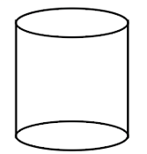
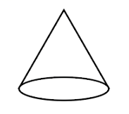
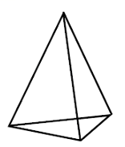
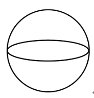
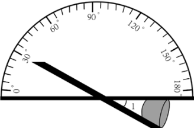
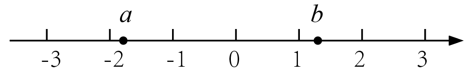

2022年北京市中考数学真题 · 选择题 第1、2、3、4、5题
1. 下面几何体中，是圆锥的为（ ）
A.

B. 
C. 
D. 
2. 截至2021年12月31日，长江干流六座梯级水电站全年累计发电量达2628．83亿千瓦时，相当于减排二氧化碳约2.2亿吨．将262 883 000 000用科学计数法表示应为（ ）
A.  B.
B.  C.
C.  D.
D. 
3. 如图，利用工具测量角，则 的大小为（ ）
的大小为（ ）

A. 30°B. 60°C. 120°D. 150°
4. 实数 在数轴上的对应点的位置如图所示，下列结论中正确的是（ ）
在数轴上的对应点的位置如图所示，下列结论中正确的是（ ）

A.  B.
B.  C.
C.  D.
D. 
5. 不透明的袋子中装有红、绿小球各一个，除颜色外两个小球无其他差别，从中随机摸出一个小球，放回并摇匀，再从中随机摸出一个小球，那么第一次摸到红球、第二次摸到绿球的概率是（ ）
A.  B.
B.  C.
C.  D.
D.